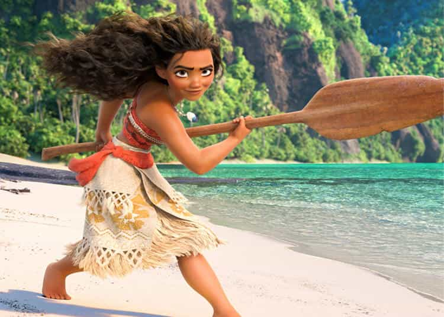
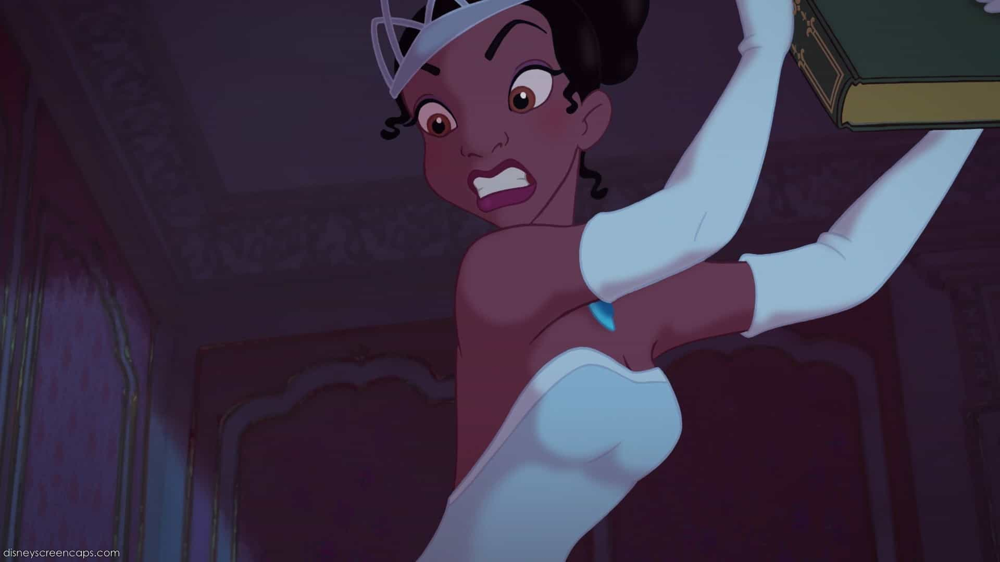

I'm a heterosexual anti-feminist and a conservative male. A frequent news watcher and I dedicate my findings to various MRA sites and anti-feminist authors. I enjoy swimming, hiking, observing mainstream entertainment and masculine literature.


In 1937, the Walt Disney Studios released its first fully animated film, Snow White and the Seven Dwarfs, and pioneered a new form of family entertainment. Disney didn’t have a reputation for being feminism friendly; what with all the waiting for Prince Charming in their earlier movies. But recently they have been more open about feminism and made sure to remove traditional elements into their movies.
The release of Snow White came on February 4, 1938. Then Cinderella in the 1950’s, where a kind, obedient, well-disciplined woman wanted to marry the prince of her dreams. They had made a movie on Robin Hood, a man that followed masculine roles, which wouldn’t be remade in the same way today.
Traditional gender roles are what nature assigned to humans, but breaking that provides excitement to women, despite them not being able to do well as men in many fields of work. The media has blasted a heavy image of “girl power” into young girls minds, and are programming them to believe in this fantasy. Here are a few prominent examples of Disney’s brainwashing efforts…

Mulan did not want to be a pretty geisha, nor did she want to have a “skinny waist and obedience that men like”, so she chopped her hair short and joined the military
One of the very first feminist Disney movie I watched was Mulan, a 1998 animated film produced by Walt Disney Feature Animation based on the Chinese legend of Hua Mulan. The plot takes place during the Han dynasty, where Fa Mulan, the tomboy daughter of aged warrior Fa Zhou, impersonates a man to take her father’s place during a general conscription to counter a Hun invasion.
In its earliest stages, the story was originally conceived as a cute romantic comedy film where Mulan, who was a daughter that loves her father, is betrothed to Shang, whom she has not met. On her betrothal day, her father Fa Zhou carves her destiny on a stone tablet in the family temple, which she shatters in anger, running away to forge her own destiny. Disney changed the original to make Mulan more feminist and empowered.
When I first saw the movie as a child, I couldn’t wrap my mind around how a woman who quit the most important position in her life had a movie based on her. They put her up on a pedestal for having a vagina? I don’t think that it should be considered “progressive” at all.
Rotten Tomatoes gives it a rating of 86%, with an average rating of 7.5/10. The site’s consensus reads, “Exploring themes of family duty and honor, Mulan breaks new ground as a Disney film.”

Frozen took over a billion dollars at the global box office, and is the most successful animated movie of all time, winning a Golden Globe for the best animated film.
Disney’s animated smash hit Frozen has been accused of spreading anti-male propaganda by a US news host. Steve Doocy slammed the film for its lack of strong male characters during an early morning talk show. He claimed that the movie empowered its female fans by turning men into ‘fools and villains.’
The show reportedly showed a clip from the movie of good guy Kristoff discussing picking his nose and another of villain Prince Hans confessing his evil plan.
‘They depict men as evil and cold and bumblers,” Ms Young Nance said on the show KSDK,com reported.
”It’s not just Disney. It’s Hollywood in general that has often sent the message that men are superfluous, they’re stupid, they’re in the way, if they contribute anything to the family, it’s a paycheck.”
As much as you may hate to believe, these accusations are correct. Men are depicted as ATM machines and nothing more.
Merida does not want to get married and perfers to remain a tomboy
Brave premiered on June 10, 2012, at the Seattle International Film Festival, and was released in North America on June 22, 2012, to both positive reviews and box office success. The film won the Academy Award, the Golden Globe, and the BAFTA Award for Best Animated Feature Film. Preceding the feature theatrically was a short film entitled La Luna, directed by Enrico Casarosa.
Brave is a story about Merida, a young princess who doesn’t fit in with the world around her. Her passion is to fight and she’s incredibly good at archery, while her mother wants her to get married and follow traditional gender roles.
The movie received critics from A Voice For Men and MRA Reddit. The only real male character, her father, was portrayed decently, considering he was given the “stodgy old guard” ball to hold, but he checked off the feminist wishlist by stopping his “control” over his daughter so she can take on the behavior of males.

The film tells the story of Moana, the strong-willed daughter of the chief in a Polynesian tribe, who is chosen by the ocean itself to reunite a mystical relic with a goddess. When a blight strikes her island, Moana sets sail in search of Maui, a legendary demigod, in the hope of saving her people.
Variety proclaimed that Moana, which grossed $300 million to date, “Is Just the Latest Feminist, Progressive Disney Hit’ to reflect “the changing face of the moviegoing public.”
“In another feminist twist, Moana is one of the first animated films not to feature a love story. Her journey is about finding herself, not landing a husband.” Bustle describes Moana as “The Hero That Every Little Girl Deserves For Generations to Come.”
The only male characters in the movie are the father and Maui. The father again, is the overbearing, controlling dad who will not let Moana get in the ocean water or go past a certain part. Maui, the demigod, is impulsive, crazy, initially mean, and thinks only of himself and how others can praise him.
He slowly comes around to trying to sacrifice for humanity, but he doesn’t save the world, Moana does. His actions are just a small help to her and she could probably have done it all without him. His only contribution is to show her how to sail. Then he leaves and sometimes flies over her as she sails with her family. The males take a backseat of modern Disney again to this “strong” female character.

The movie is the story of a young, African-American woman, Tiana, who lives in New Orleans. She dreamed about owning her own restaurant named Tiana’s Palace. She works multiple jobs and saves money in cans in order to buy the old sugar mill in her neighborhood and turn it into her beloved restaurant.
Unfortunately, she is told that another man has put in a higher bid and she is given only a couple more days to come up with extra money in order to outbid the unknown gentleman. The now depressed Tiana showed up to a ball and ends up kissing a talking frog that claims to be Prince Naveen, who was turned into a frog by an evil voodoo man. Instead of turning the frog back into the Prince, Tiana is turned into a frog herself.
Tiana’s father performs the more feminine role and her mother, even though she is a seamstress, is shown performing the more masculine role. At six-years-old, Tiana shows her dislike for fairy tales and stories where a man saves the woman. She’s a close friend of a blonde white princess who has more traditional views of femininity and female roles, but who is ultimately portrayed as stupid because she believes a woman should want marriage.
While Tiana and the prince are in frog form, Prince Naveen is constantly shown to be much weaker and incredibly stupider than Tiana. It is Tiana who saves Prince Naveen from being eaten by alligators. She also makes a raft for them to escape down a river.
New Beauty and the Beast with a feminist twist
Disney has announced that the new “Beauty and the Beast” film will add a subplot that definitely was not in the original. Specifically, one of the male characters will “explore his sexuality” throughout the movie, leading to, as the director describes it, a “delicious payoff” where the character will engage in an “exclusively gay moment.”
The director says that the gay character, LeFou, develops a crush on another male character, leading to a dynamic where “one day LeFou wants to be Gaston and on another day wants to kiss Gaston.” That’s weird and perverse on several levels for a kids movie. The director of “Beauty and the Beast” has been clear that one of his intentions is to normalize homosexuality.
As I’ve read on A Voice For Men:
If we remove the fantasy and the characters, and look at it purely in terms of actions, then we are met with this path of characterization.
1: Horrible, evil masculine male who cannot control himself (Villain)
After meeting a woman he becomes:
2: Possibly a redeemable person, he has a few feminine traits
After changing to suit a woman he is:
3: A victim in need of love and affection to limit his masculine traits and become a feminized person, thus entering the stage of being worthy of society.
A man is only acceptable when he gives up his masculinity. When a woman enters his life, it makes him ashamed about his manliness, and thus again, another one of those feminist propaganda. This is a very common theme even in so-called masculine movies like Thor.
Any animated film made within the past 25 years with a female protagonist is going to reinforce modern female opinions and prejudices:
As time has passed, Disney has gotten much more pressured with their portrayals of women. Long gone are the beautiful realistic women of the Cinderellas and Auroras, who lack any agency and must depend on men to get them out of trouble.
Today’s Disney female characters are, however subconsciously, instilling in young girls the idea that you can be empowered, fight your own battles, and create your own happy ending without the help of a man. They also teach girls that men should believe that their life is complete only with a woman. We cannot discount the effect this propaganda is having on today’s girls, and how it is sure to lead to more feminist degeneracy in the future.
Read Next: The New Star Wars Movie Spinoff Reaffirms Disney’s Hatred Of White Males